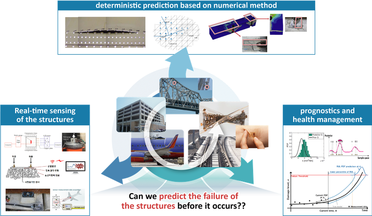
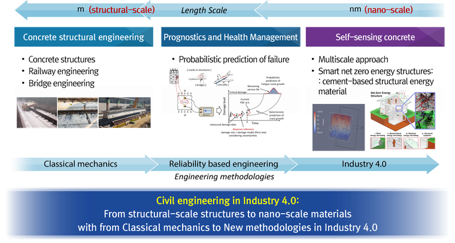

RESEARCH
THEME


Can we predict the failure of the structures before it occurs??
- Develop efficient numerical analysis and algorithms for various engineering problems
- Develop an optimal sensing system to properly monitor structural behavior
- Detect signs of failure of a structure and Predict its remaining useful life
Can we contribute to the environment??
- Develop Net Zero Energy Structure
GRANT
- 탄소저감형 수중데이터센터 실증모델 개발
- 항공기 이탈방지용 긴급제동 활주로 시스템(EMAS) 개발
- 고강도 무시멘트 콘크리트 재료 및 설계·시공 기술 개발
- 체결력 1kN 이상을 만족하는 대형구조물용 섬유강화복합재 적용 30% 경량화 Walk to Work(W2W) 부품개발
- 이산화탄소 포집 및 광물탄산화 기술 적용 시멘트 제품 종합실증센터 구축
- 섬유보강 초고밀도 콘크리트의 압축강도 예측모델 및 배합 기술 분석
- 전도성 자가진단 시멘트 센서 활용 지반 이방성 응력 계측 시작품 제작 및 성능평가
- 초고밀도 콘크리트의 압축강도 예측을 위한 충진밀도 모델 구축과 시험체 제작 및 물성 측정
- 이방성 응력 계측이 가능한 전도성 나노소재 기반 센싱 기술 설계 및 실험 용역
- GFRP 보강 콘크리트 구조물 시공기준 개발연구
- 전도성 나노소재 혼입 그라우팅의 지반 열화 시의 지하수 침투 모니터링 실험 용역 자문
- 스마트 건설기준 정립 및 기준 고도화 용역
- 전력구터널 레일 침목 및 가설통행로 전력구조물 FRP 개발 연구용역
- 전력구 종합성능평가 기준 수립 및 자동화 기술 개발
- 전도성 나노소재를 활용한 자가진단 프리캐스트 콘크리트 기술 개발
- GFRP 보강근 전력구조물 적용관련 연구용역
- 터널의 에너지 생산 및 결로 방지 장치의 기초 실험 및 타당성 검증 용역
- 전도성 나노소재 혼입 그라우팅의 차수성능 확보를 위한 최적 시스템 구성 도출 용역
- 대형 민수항공기 이코노미급 복합재 경량 좌석 국산화 개발
- 전도성 나노소재 혼입 그라우팅의 적정 혼합 배율 도출 용역
- 전도성 나노소재를 혼입한 그라우팅 시편 제작 및 전기적 특성 파악 용역
- 철도·궤도시설 기술기준 개선 연구
- GFRP와 섬유보강 콘크리트 기술을 활용한 신호교란 없는 고성능 프리캐스트 슬래브 궤도 개발
- 시멘트기반 센서와 무선전송 기술 융합 자가진단 철도침목 기초연구
- 시멘트센서 기반 자가진단철도침목 기초기술 연구
COLLABORATION
- Prof. Ilhwan You, Rural Construction Engineering Department, Jeonbuk National University
- Dr. Jeongjun Park, Advanced Railroad Civil Engineering Division, Korea Railroad Research Institute
- Prof. Doo-Yeol Yoo, Department of Architecture and Architectural Engineering, Yonsei University
- Prof. Dongwhi Choi, Department of Mechanical Engineering, Kyung Hee University
- Prof. Jin-Gyun Kim, Department of Mechanical Engineering, Kyung Hee University
- Prof. Hyunoh Shin, Department of Agricultural and Rural Engineering, Chungnam University
- Prof. Do-Young Moon, Department of Civil Engineering, Kyungsung University
- Prof. KyuHan Kim, Department of Chemical and Biomolecular Engineering, Seoul National University of Science and Technology
- Prof. Dahoon Ahn, Department of Mechanical System Design Engineering, Seoul National University of Science and Technology